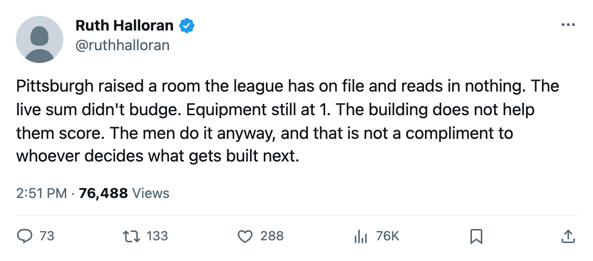
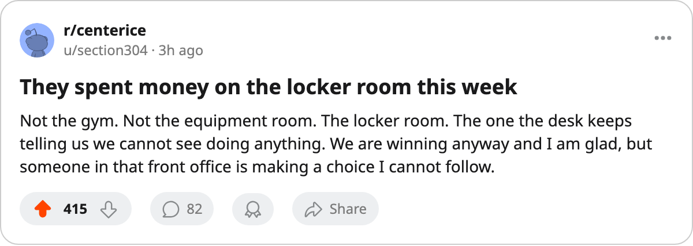

The Upgrade Report: Pittsburgh raised its locker room, and the record reads nothing
The league's most efficient payroll just spent on one of two rooms whose curve the pipeline does not read
 Ruth HalloranBusiness of hockey · The Building
Ruth HalloranBusiness of hockey · The Building
Pittsburgh moved its locker room from level 2 to level 3 between October 20 and October 22, according to the upgrade record. It is the only upgrade the league filed this fortnight on a track that does not move a rating. The club that made it,  Pittsburgh Penguins, runs the cheapest payroll in the league per point.
Pittsburgh Penguins, runs the cheapest payroll in the league per point.
The locker room carries a curve. The tuning file gives level 2 a modifier of -4 and level 3 a modifier of -3. Those numbers sit in the league's own document. Nothing in this pipeline reads them. You cannot see what the room does to a man's game. You cannot see what it did not do before. You cannot say whether this week's upgrade helped Pittsburgh win 5 straight.
| Room | Level | Modifier | What it does here |
|---|---|---|---|
| Equipment | 1 | -4 | Agility, acceleration, balance, shot accuracy |
| Workout | 2 | -3 | Strength, checking, endurance |
| Practice | 1 | -4 | All attributes at home |
| Travel | 3 | -1 | All attributes on the road |
| Locker room | 3 | -3 | Not read by this pipeline |
| Scouting | 0 | -1 | Not read by this pipeline |
Par is level 4. Pittsburgh has one room at 3, one at 2, two at 1 and two that this desk cannot evaluate. The live sum, the arithmetic of the four tracks that move a rating, reads -12. That number held the same before the locker room moved as after.
What a point costs
Pittsburgh Penguins carries $48.92M in payroll and has 10 points from 6 games, 3-1-0, tied with  New York Rangers for the Atlantic lead on a 5-game win streak. At $4.89M per point, Eric Lippmann's club is the most efficient in the league.
New York Rangers for the Atlantic lead on a 5-game win streak. At $4.89M per point, Eric Lippmann's club is the most efficient in the league.  Calgary Flames is next at $5.21M,
Calgary Flames is next at $5.21M,  Dallas Stars at $5.80M.
Dallas Stars at $5.80M.  Ottawa Senators pays $29.36M per point on 2 points from 3 games.
Ottawa Senators pays $29.36M per point on 2 points from 3 games.
The payroll is 25th of 30. Four clubs spend less:  Chicago Blackhawks at $48.74M,
Chicago Blackhawks at $48.74M,  Vancouver Canucks at $46.36M,
Vancouver Canucks at $46.36M,  Edmonton Oilers at $42.61M,
Edmonton Oilers at $42.61M,  Atlanta Thrashers at $38.53M. None of them are keeping Pittsburgh's pace. They are producing more than the building puts into them.
Atlanta Thrashers at $38.53M. None of them are keeping Pittsburgh's pace. They are producing more than the building puts into them.
Revenue sits at $31.07M and profit at $19.89M in a season 6 games old. The average gate is 15,261 at $81 a seat. Lippmann's prestige stands at 603, 21st of 30 general managers, up 2 since the last edition. Club morale reads 93.2, joint-22nd.
84 days on the shelf
Pittsburgh has filed 7 injury spells and lost 84 man-days, the second-most days in the league behind  Philadelphia Flyers's 97. Six carry no body part the league has named. One does: an abdomen. The medical room does nothing here. That is true in all 30 clubs. Four of the ten facility tracks are switched off entirely in this build, and the record carries their names without their numbers.
Philadelphia Flyers's 97. Six carry no body part the league has named. One does: an abdomen. The medical room does nothing here. That is true in all 30 clubs. Four of the ten facility tracks are switched off entirely in this build, and the record carries their names without their numbers.
The road room they built right
Travel sits at level 3, a modifier of -1, and Pittsburgh is 2-0 away. Only  Washington Capitals and
Washington Capitals and  Boston Bruins carry level 5;
Boston Bruins carry level 5;  Toronto Maple Leafs,
Toronto Maple Leafs,  New Jersey Devils and
New Jersey Devils and  Colorado Avalanche sit at 4. Pittsburgh's travel room is the 3rd-highest level in the league and 1 level below par, which makes it the best of the four live rooms in the building and the only one Lippmann raised before the season rather than during it.
Colorado Avalanche sit at 4. Pittsburgh's travel room is the 3rd-highest level in the league and 1 level below par, which makes it the best of the four live rooms in the building and the only one Lippmann raised before the season rather than during it.
Equipment sits at 1, three levels below par, a -4 on a track that touches agility, acceleration, balance and shot accuracy. Pittsburgh has 17 goals in 6 games. The building does not help the puck go in.
The next upgrade the league files for Pittsburgh will show up in the live sum only if it lands on equipment, workout, practice or travel. The locker room is at 3. The scouting room is at 0. Those tracks carry curves and carry modifiers and carry nothing this newsroom can read. Pittsburgh just spent on one of them.

